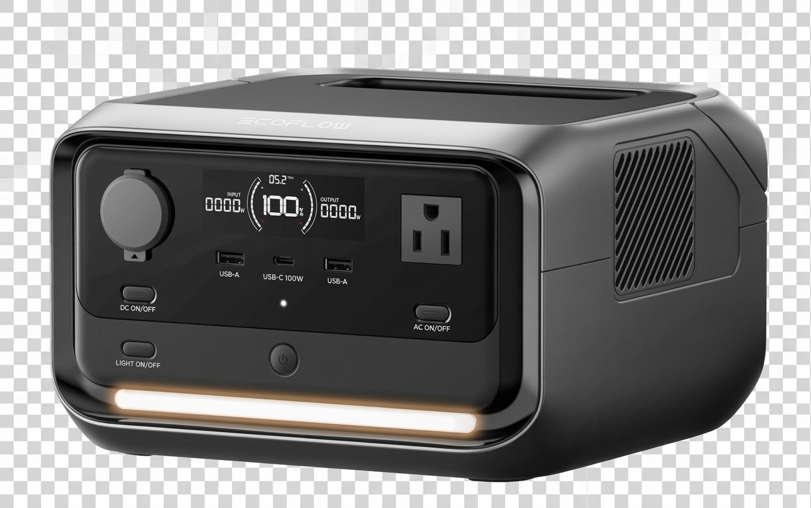
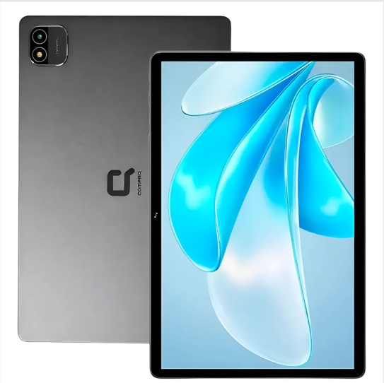
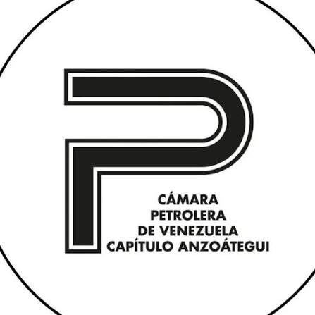
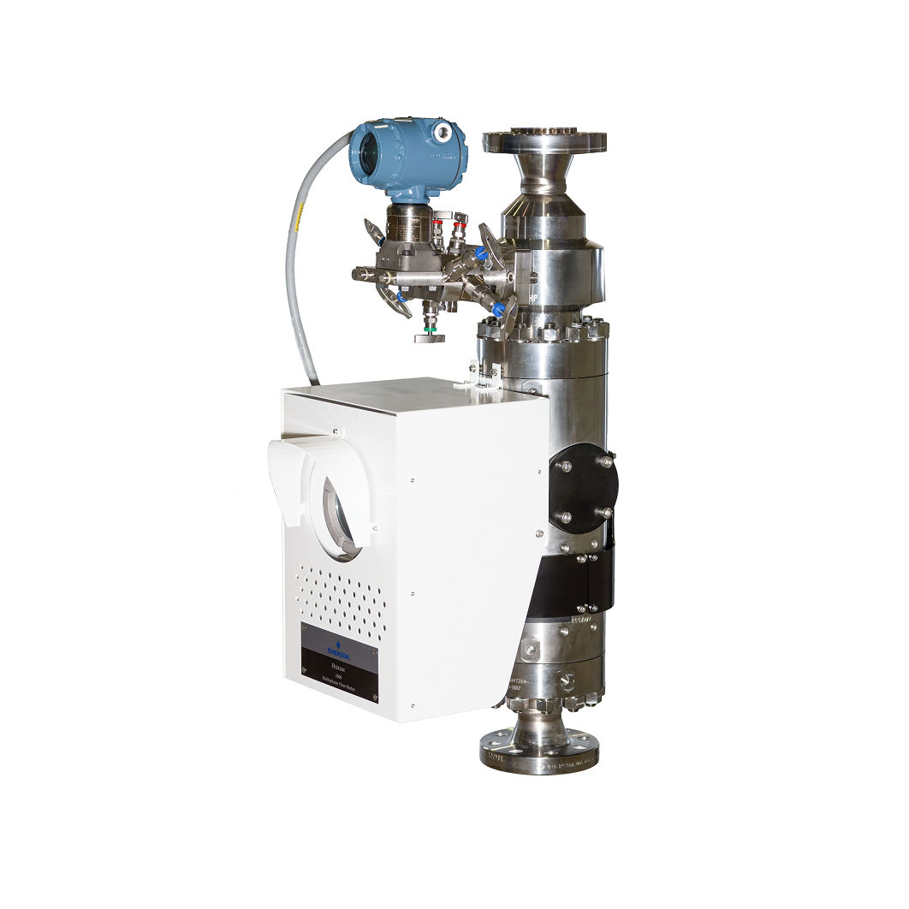
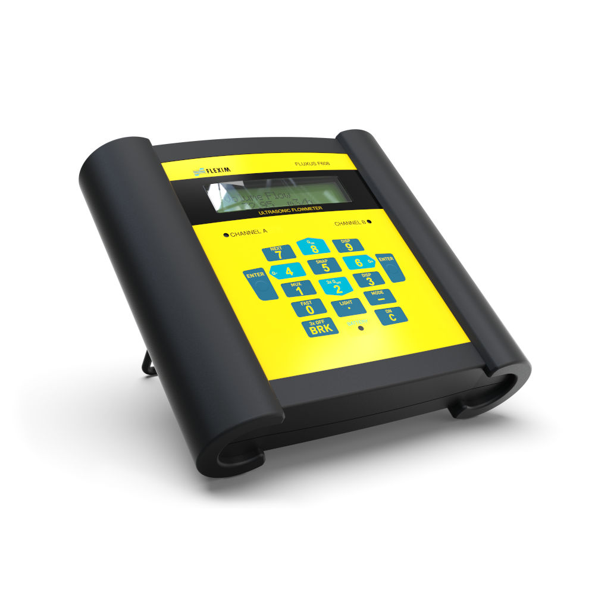
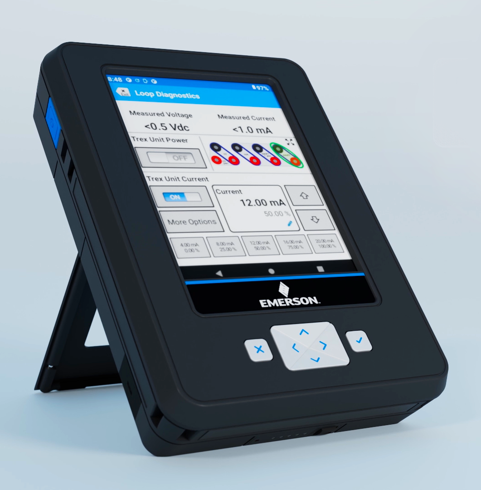
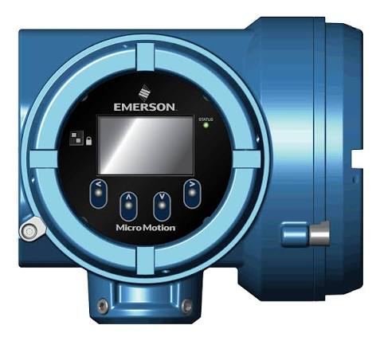

Demuestra tu talento en
Medición, Pozos y Tecnología
Supera nuestro Desafío Técnico de 5 preguntas avanzadas sobre ingeniería de pozos, automatización y soluciones de AIC TECH y Emerson (Roxar, Flexim, Trex). Clasifican al gran sorteo en público quienes obtengan al menos 4 de 5 aciertos (≥80%).
Premios Exclusivos del Concurso

EcoFlow River 3
Estación de energía portátil de última generación con tecnología LiFePO4 ultra-rápida. Ideal para operaciones en campo, respaldos críticos de instrumentación y campamentos.

Tablet Compaq 12"
Tablet de gran formato y pantalla HD de 12 pulgadas. Potencia y ergonomía para revisión de planos técnicos, supervisión de reportes, telemetría y productividad móvil.

Cámara Petrolera (CPV)
Impulsando el contenido nacional, el talento técnico venezolano y la soberanía energética desde 1978.
AIC TECH, C.A.
Base en Anaco. Soluciones Llave en Mano, pruebas de pozos, automatización y trasegado seguro de fluidos.
Tecnología Emerson
Instrumentación y medición de flujo de clase mundial: Roxar 2600, Flexim, AMS Trex y Micro Motion.




Registro de Participante
Completa tus datos profesionales para asociar tu boleto al sorteo y comenzar la trivia técnica.
Cargando pregunta...
¡Felicitaciones, has Clasificado!
Demostraste un conocimiento especializado en ingeniería de pozos y tecnologías de medición. Tu boleto oficial entra al Gran Sorteo en Público de AIC TECH.
¡Copia el texto y pégalo en la publicación de Instagram!
Para que App Sorteos tome en cuenta tu boleto para la EcoFlow River 3 y la Tablet Compaq en el sorteo en vivo del Sábado 21/11 a las 6:00 PM, completa estos 2 sencillos pasos:
¡Aprobé el Desafío Técnico de AIC TECH (Stand #5 • Patrocinante Premium)! 🚀 Sorteo en público: Sábado 21/11 a las 6:00 PM. Ticket: #VE26-0000
💡 Instrucción: Al abrirse Instagram, mantén presionado el dedo en la caja de comentarios y selecciona "Pegar".
Asegúrate de seguir a @aictechca en Instagram para presenciar el sorteo en vivo.
¡Gracias por Participar!
El concurso oficial de AIC TECH en la EVE 2026 exige un nivel de especialización riguroso: se requiere un mínimo de 4 de 5 aciertos (≥80%) para clasificar al sorteo en público de la EcoFlow River 3 y la Tablet Compaq 12".
Te invitamos a conversar con nuestro equipo de ingenieros en el Stand #5 de AIC TECH. Podrás consultar sobre pruebas de pozos, medición multifásica Roxar, ultrasonido Flexim y calibración AMS Trex, ¡y volver a intentar el desafío técnico!